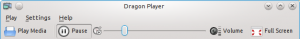
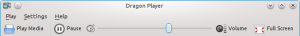

I have a few pet peeves in KDE. One of them was the Play/Pause button in Dragon Player. It looked really weird to me that the Pause button would stay sunken will playing:
I could have gone the easy way and fixed this in Dragon Player code, but I went the longer way instead because I thought there was something to do to make the life of KDE developers easier.
When there is a need for an action which change from one set of icons and texts to another when triggered, developers often end up using KToggleAction to implement it, because the setCheckedState() method looks just like what is needed (despite the warning in its doc saying "Note that this does not replace the check box in front of the menu.")
The first step was to write a page on toggle buttons for KDE HIG, getting it reviewed and accepted on kde-usability mailing list. You can find it here. This page documents when toggle buttons should be used and when they should not (and one of the examples is a Play/Pause button, how surprising!).
The second step was to write an action class to make it easier for developers to create actions which changes their icons and texts without being toggle actions. I first thought I could modify KToggleAction, but it turned out not to be possible, so I wrote a new class instead: KDualAction.
KDualAction features two states: active and inactive. Each state has setters and getters for icon, text and tooltip. Defining a KDualAction looks like this:
KDualAction* action = new KDualAction(parent);
// Define inactive state
action->setInactiveIcon(KIcon("media-play"));
action->setInactiveText(i18n("Play"));
// Define active state
action->setActiveIcon(KIcon("media-pause"));
action->setActiveText(i18n("Pause"));
// Connect our action
connect(action, SIGNAL(activeChanged(bool)), SLOT(doSomething(bool)));
Note that the icon and text must describe which state the application will be in after the action is triggered. That's why in this example the text is "Play" when the action state is inactive (aka paused).
The class is designed so that it is easy to replace a KToggleAction. The documentation describes the necessary steps to replace a KToggleAction with a KDualAction.
It has a few extra features:
Dragon Player has now been patched to use KDualAction, its toolbar looks better now (at least according to me): 
KDualAction is part of kdelibs 4.6, so any KDE trunk application can use it now.
Note: I initially thought about porting all the "Show/hide 'ui element'" actions in KDE to use KDualAction, but it proved to be a bad idea: the Settings menus were more difficult to read after the change. If your application uses KToggleAction to toggle a user interface element with "Show Element" as unchecked state and "Hide Element" as checked state, you should not port your action to KDualAction, instead you should just remove the call to "setCheckedState("Hide Element")".
{kind=link}
{kind=link}